Achsen- und Punktsymmetrien
Erkennen und zeichnen
Drei Lektionen zur Einführung von Punkt- und Achsensymmetrien
Lektion 1
30’ Input Symmetrien mit Auftrag (GA)
Material:
- Kuvert mit 5 Dreiecken, 5 Vierecken, 5 Fünfecken, 5 Sechsecken und 5 Kreisen aus Papier
- 5 Kuverts mit ca. 15-20 Figuren und Formen aus Papier, eine Vorlage dazu findet sich beim Unterrichtsmaterial
Der beschriebene Unterrichtseinstieg dient als Idee für eine spielerische Einführung in die Abbildungsgeometrie und nimmt ungefähr 30min in Anspruch.
Die LP zeigt eine PowerPoint-Präsentation mit verschiedenen Bildern, bei welchen die SuS erkennen sollen, dass alle eine gewisse Symmetrie haben. Die Bilder werden nacheinander gezeigt. Die SuS sollen bei jedem Bild kurz zu zweit besprechen, was ihnen daran gefällt, auffällt… Am Ende wird in der Klasse zusammengetragen, was den SuS aufgefallen ist und was die Bilder gemeinsam haben. Dabei soll das Wort Symmetrie von den SuS genannt und kurz erklärt werden (Präkonzepte aktivieren).
Anschliessend werden auf den Bildern alle Symmetrieachsen eingezeichnet, dabei sollen die SuS jeweils selbst sagen können, wo sie eine Spiegelachse erkennen. Die nächste Folie zeigt bei drei Bildern Punktsymmetrien, die LP erklärt kurz, was diese ausmacht.
Folie 11 enthält kurze Erklärungen zu Punkt- und Achsensymmetrien, diese Erklärungen finden sich im Skript, das die SuS erhalten, wieder.
Auf der letzten Folie findet sich eine Erklärung für den darauffolgenden Auftrag. Dieser soll von der Lehrperson zusätzlich noch erklärt werden, damit mehr Lerntypen angesprochen werden.
Auftrag:
Die Klasse wird in 5 Gruppen à 4-5 Schüler*innen aufgeteilt. Die Gruppenaufteilung kann z.B. mit Papierformen passieren. Dazu verteilt die Lehrperson jeder Schüler*in ein Dreieck, Viereck, Kreis, Fünfeck oder Sechseck aus Papier. Jede Art von Form ergibt eine Gruppe, die sich zusammen um eine Pultgruppe (oder Ähnliches) setzt.
Nun verteilt die Lehrperson an jede Gruppe ein Kuvert mit vielen verschiedenen Papierformen, Jasskarten, oder Objekten aus dem Schulzimmer wie Stifte, Scheren, Radiergummis etc. Die Gruppen sollen die Gegenstände nun zusammen in die Kategorien Punktsymmetrisch, Achsensymmetrisch und nicht symmetrisch aufteilen.
Wenn die Gruppen fertig sind mit der Aufteilung, erteilt die Lehrperson den Auftrag alle Symmetrieachsen und Drehzentren auf den Figuren aus Papier einzuzeichnen und sich bei den Alltagsgegenständen zu überlegen, wo die Achsen/Drehzentren wären.
Wenn die SuS fertig sind, dürfen sie mit den Aufgaben im Skript beginnen.
15’ Aufgaben lösen (Aufgaben 1,2)
Lektion 2
15’ Aufgaben lösen (Sek. bis und mit 4 fertig, Real und mit 3 fertig)
Erklärung zum freiwilligen Input zu Konstruktionen
15’ Input zu Konstruktionen
15’ Aufgaben lösen (Sek. bis und mit 3d, Real bis und mit 3b)
Lektion 3
15’ Begrüssung und Input Drehungen
30’ Aufgaben lösen
Skript
Einführung
In dieser Lernumgebung lernst du Symmetrien, Spiegelungen und Drehungen kennen. In der Klasse habt ihr bereits eine Einführung zu Punkt- und Achsensymmetrien gehört. Nun kannst du dein Wissen auf dem Gebiet vertiefen. Beginne bei der Aufgabe 1. Wenn du bei Aufgabe 3 angekommen bist, lies den Input zu den Konstruktionen mit Zirkel und Geodreieck durch, oder warte auf den Input deiner Lehrperson zu dem Thema. Die vierte Aufgabe lösen alle zusammen in der Klasse, wenn du bereits früher bei dieser Aufgabe angekommen bist, kannst du sie überspringen und mit Aufgabe 6 beginnen.
Nach dem Bearbeiten dieser Lernumgebung kannst du…
Achsen- und punktsymmetrische Formen erkennen.
Alle Symmetrieachsen in einer achsensymmetrischen Figur einzeichnen.
Das Drehzentrum in einer punksymmetrischen Figur ermitteln und einzeichnen.
Punkte und Figuren an einer Achse und einem Punkt spiegeln.
Eine einfache Figur in einem Raster um 90°, 180° und 270° drehen.
Erweiterte Lernziele: Doppelspiegelungen mit zwei senkrechten oder zwei parallelen Geraden durchführen und diese zu den Begriffen Punktspiegelung und Verschiebung zuordnen.
Begriffe
Während dem Bearbeiten der Lernumgebung kannst du jederzeit hier Begriffe und deren Definitionen nachlesen kommen. Diese Begriffe solltest du nach der Bearbeitung der Lernumgebung kennen:
Definition 1 (Achsensymmetrie) Achsensymmetrie bedeutet, dass eine Figur oder ein Objekt so gespiegelt werden kann, dass beide Hälften entlang einer Achse identisch sind. Wenn man die Figur an der Symmetrieachse faltet, liegen beide Seiten genau übereinander.
Definition 2 (Punktsymmetrie) Eine punktsymmetrische Figur oder ein punksymmetrisches Objekt kann um 180° um einen Punkt (Drehzentrum) gedreht werden und sieht danach genau gleich aus, wie zuvor.
Definition 3 (Achsenspiegelung) Eine Achsenspiegelung ist eine Spiegelung an einer geraden Linie (Achse), bei der jeder Punkt und sein Bildpunkt genau gleich weit von dieser Achse entfernt sind, aber auf gegenüberliegenden Seiten liegen. Man kann sich dies vorstellen, als würde man ein Bild an einem Spiegel entlang einer Linie spiegeln.
Definition 4 (Punktspiegelung) Eine Punktspiegelung ist eine Spiegelung an einem festen Punkt, bei der jeder Punkt und sein Bildpunkt genau gleich weit von diesem Spiegelpunkt entfernt sind, jedoch auf der gegenüberliegenden Seite liegen. Man kann sich dies wie eine Drehung um 180 Grad um das Drehzentrum vorstellen.
Definition 5 (Doppelspiegelung) Eine Verkettung von zwei Spiegelungen an zwei verschiedenen Geraden.
Konstruktion von Achsenspiegelungen und Punktspiegelungen mit dem Geodreieck und Zirkel
Du wirst beim Bearbeiten der Lernumgebung auf Konstruktionen von Achsenspiegelungen mit Zirkel und Geodreieck treffen. Du kannst dir die Anleitung durchlesen und selbstständig versuchen, diese anzuwenden. Wenn du lieber einen Input von deiner Lehrperson dazu hören möchtest, melde dich bei ihr.
Achsenspiegelung
- Wähle den Punkt aus, den du spiegeln willst.
- Ziehe eine senkrechte Linie vom Punkt auf die Spiegelachse, ziehe die Senkrechte mindestens noch einmal gleich lang weiter. Benenne die Gerade mit einem Buchstaben, z.B. g.
- Stecke deinen Zirkel beim Schnittpunkt der Spiegelachse und deiner gezogenen Gerade g ein. Stelle den Zirkel so ein, dass die Bleistiftspitze genau auf dem Punkt, den du spiegeln willst, liegt.
- Ziehe einen Kreis mit deinem eingestellten Zirkel, der beim Schnittpunkt von Spiegelachse und Gerade g eingesteckt ist. Der entstandene Schnittpunkt zwischen Gerade g und dem Kreis, ist dein Spiegelpunkt.
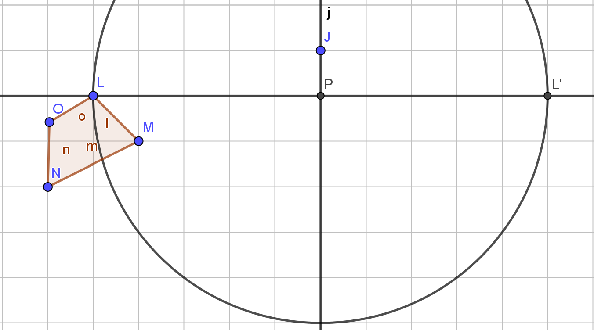
Punktspiegelung
- Halte dein Geodreieck auf den Punkt, den du spiegeln möchtest und den Punkt P, an den gespiegelt wird. Verbinde die beiden Punkte, ziehe die Linie dabei aber weiter als den Punk P.
- Stecke deinen Zirkel bei Punkt P ein und stelle ihn so ein, dass er genau auf den Punkt kommt, den du spiegeln möchtest.
- Zeichne nun einen Kreis mit deinem Zirkel, um den Punkt P.
- Der Schnittpunkt des Kreises und der Gerade, die du bei Schritt 1 gezeichnet hast, ist dein Bildpunkt.
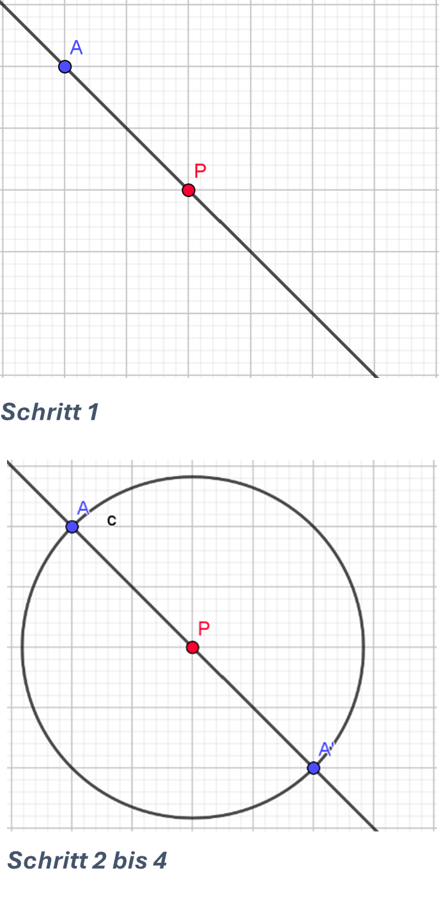
Übungsaufgabe 1 (Schmetterlinge (5’-10’) spiegeln) Grundlegenden Aufgaben:
Zeichne den rechten Schmetterlingsflügel symmetrisch zum linken dazu. Zähle dafür jeweils die Anzahl Kästchen des Rasters bis zur Spiegelachse.
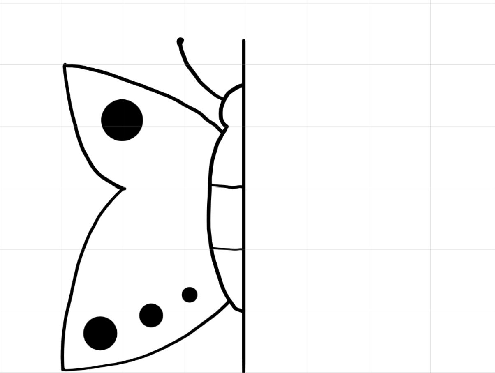
Übungsaufgabe 2 (Symmetrien in der Natur (10’)) Gehe für 5 Minuten nach draussen (sage dabei deiner Lehrperson Bescheid) und suche nach einem Achsensymmetrischen und einem punktsymmetrischen Gegenstand. Male deine Fundstücke ab und zeichne deren Symmetrieachsen und Drehzentren ein. (Hinweis: So wie auch die Menschen sind alle Gegenstände aus der Natur nie ganz perfekt symmetrisch, suche nach Dingen, die möglichst nah an eine Symmetrie kommen.) (10’)
Übungsaufgabe 3 (Achsenspiegelung (10’)) Für die Aufgaben 3a, 3b, 3c und 3d Aufgabe solltest du den Input zu den Konstruktionen der Spiegelungen gehört haben, oder die Erklärung am Anfang des Skripts dazu gelesen haben.
Spiegle die drei Originalpunkte A, B und C an der Spiegelachse S und bezeichne deine Bildpunkte A’, B’ und C’.
Erfinde drei weitere Originalpunkte E, F und G und zeichne deren Bildpunkte E’, F’ und G’ ein.
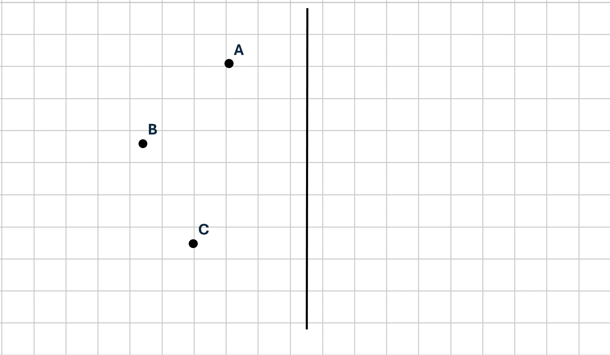
Spiegle die Figur an der Gerade 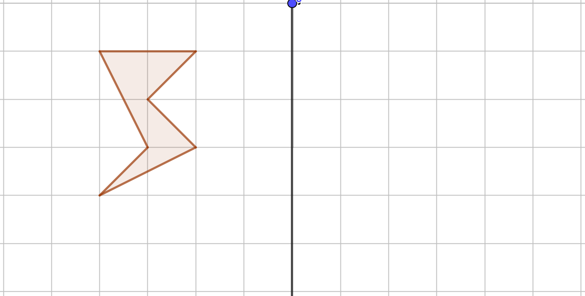
Verbinde die Punkte A, B und C zu einem Dreieck. Spiegle die drei Punkte anschliessen and Punkt P und zeichne das Dreieck A’B’C’.
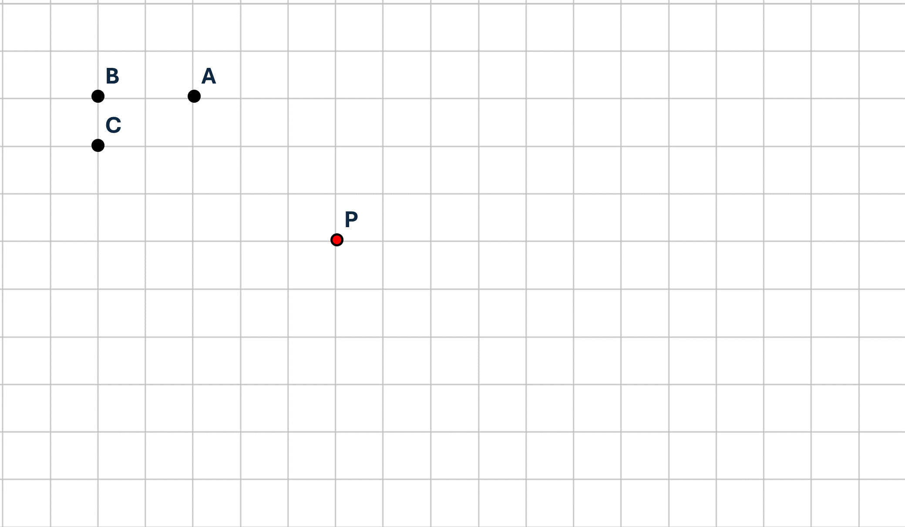
- Zeichne bei der Zeichnung der Chili drei wesentliche Punkte ein, benenne deine Punkte mit A, B und C. Spiegle die drei Punkte an dem Punkt P und skizziere anschliessend das Spiegelbild der Zeichnung anhand deiner drei Bildpunkte A’, B’ und C’.
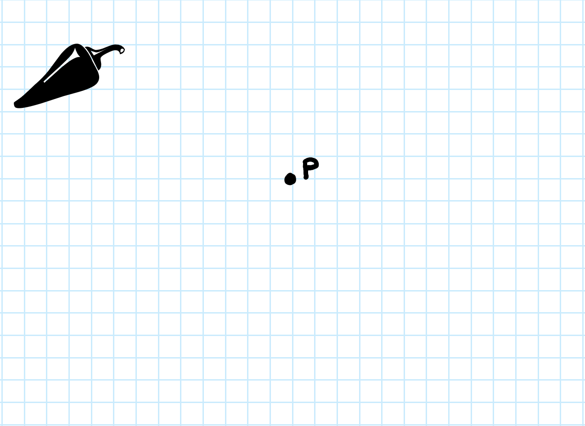
Übungsaufgabe 4 (Input zu Drehungen im Raster (10’-15’)) Hier ist Platz für einen Auftrag, den deine Lehrperson der ganzen Klasse erklären wird. Es geht dabei um Drehungen, wenn du willst, kannst du dich bereits hier darüber informieren.
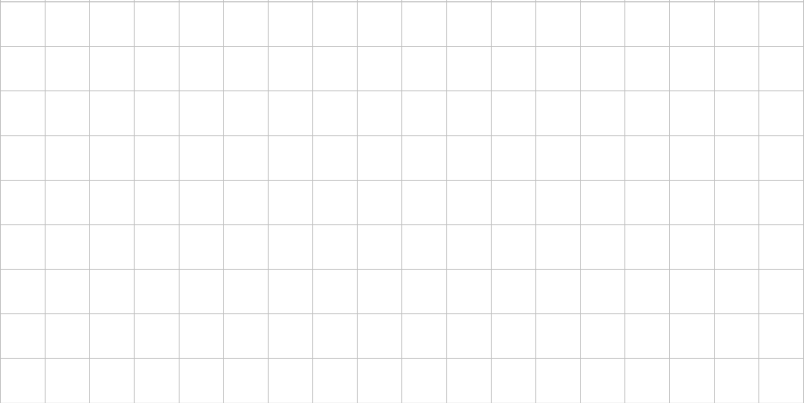
Übungsaufgabe 5 (Einfache Drehungen (15’))
- Bevor du diese Aufgabe beginnst, solltest du den Input deiner Lehrperson zu den Drehungen gehört haben. Falls der Input noch nicht gegeben wurde, kannst du dein Wissen zu den Symmetrien und Spiegelungen bei der 6. Aufgabe vertiefen.
Drehe die Formen um 90°, 180° und 270° und zeichne die gedrehte Form rechts neben die Originalform.
Drehe die Figuren um…
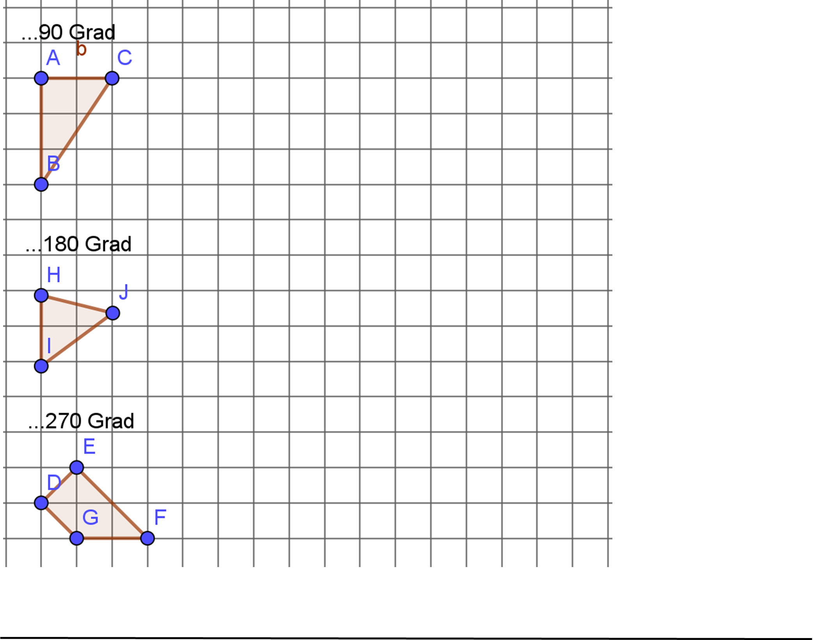
- Drehe die Form einmal um 270° und einmal um 90°, wie stehen deine beiden Bildfiguren zueinander?
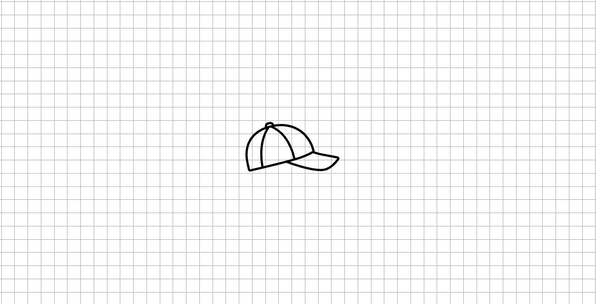
Übungsaufgabe 6 (Forschungsaufgabe (20’))
Öffne auf einem Computer Geogebra und zeichne einige Punkte (mindestens 3, höchstens 8).
Die Form zeichnest du, indem du bei der “Eingabe” unten links “Vieleck (A,B,C,…) eingibst. Dadurch werden deine Punkte verbunden und es entsteht eine Figur.
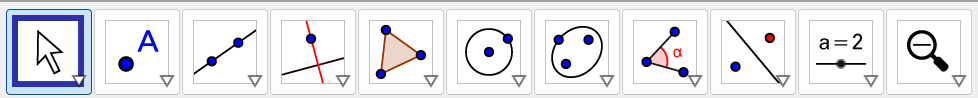
Zeichne zwei weitere Punkt und gib bei “Eingabe” “Gerade (Name deines 1 Punktes, Name deines zweiten Punktes)” ein.
Gib bei “Eingabe” “spiegle (Name deines Vielecks, Name deiner Gerade) ein. Nun hast du dein Vieleck an einer Gerade gespiegelt.
Zeichne weitere Geraden und spiegle deine Form an den Geraden.
Konstruiere auf Geogebra zwei Geraden, die senkrecht zueinanderstehen (der Winkel der beiden Geraden beträgt genau 90°). Dafür kannst du zuerst eine beliebige Gerade und einen beliebigen Punkt zeichnen. Gib bei “Eingabe” “Senkrechte (Name deines Punktes, Name deiner Geraden)” ein. Spiegle deine Form an den beiden senkrechten Geraden. Was kannst du beobachten, wie sieht deine Figur jetzt aus?
Erweiterte Aufgabe: 6g. Zeichne noch einmal ein beliebiges Vieleck. Experimentiere mit deiner Form und den Werkzeugen auf Geogebra herum. Versuche z.B. deine Form um verschiedene Winkel zu drehen, sie an Achsen oder Punkten zu spiegeln, die die Figur berühren etc. (höchstens 10’)
Übungsaufgabe 7 (Erweiterte Aufgabe: Doppelspiegelung konstruieren. (5’))
- Spiegle das Dreieck an den beiden Geraden g und h mit deinem Geodreieck
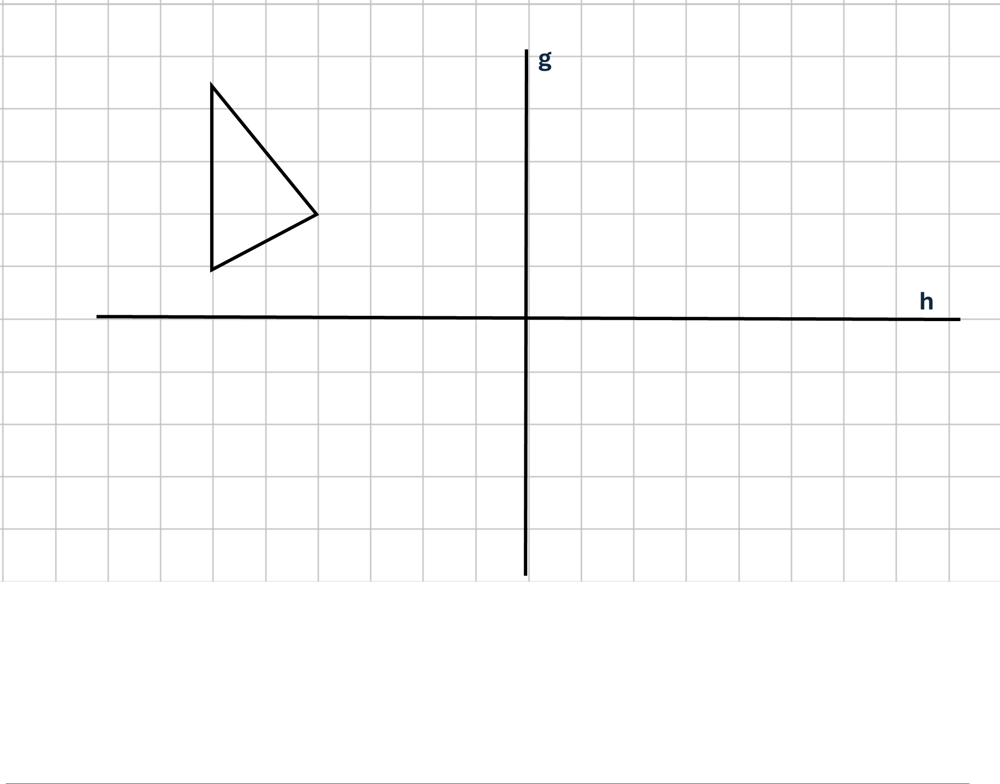
- Spiegle das Dreieck an den beiden Achsen, Was fällt dir auf? Wie könnte man diese Art von Verkettung von zwei Spiegelungen nennen?
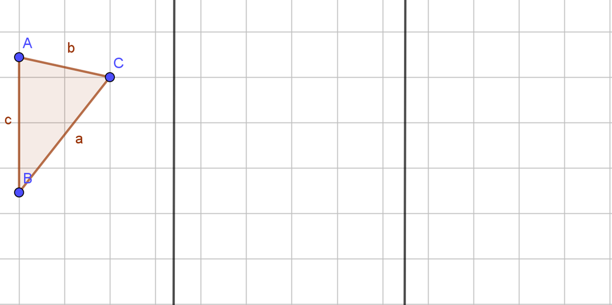
Übungsaufgabe 8 (Erweiterte Aufgabe: Finde die Achsen (10’))
- 3a. Das Dreieck ABC wurde am Punkt P gespiegelt. A’B’C’ ist sein Bilddreieck. Finde die beiden Achsen, die den Punkt ersetzen können, ohne dass sich Dreieck ABC und sein Bilddreieck bewegen.
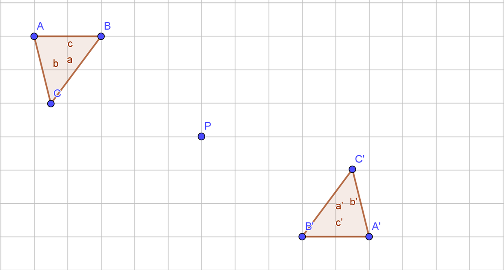
- 3b. Finde die beiden Achsen, an welchen die Figur DEFG gespiegelt wurde.
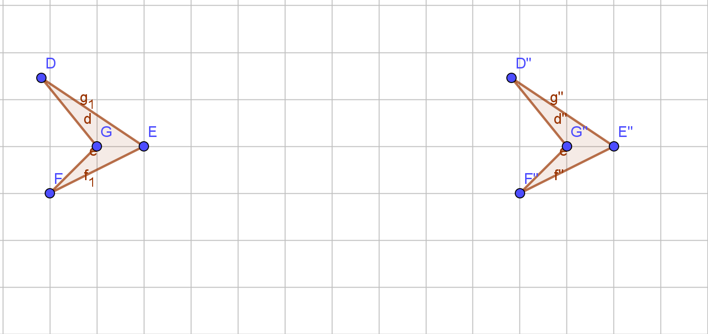
Hinweis: Wenn du nicht weisst, wie du die Achsen findest, schaue dir die Spiegelungen bei den erweiterten Aufgaben 1 und 2 an und analysiere, wo genau diese liegen (z.B. wie weit von welchen Punkt entfernt).
Lehrpersonenkommentar
Das Thema ist eines der ersten, das in der Sekundarstufe I im Mathematikunterricht behandelt wird (laut unserer Makroplanung aus dem Seminar). Deshalb habe ich bei der Planung darauf geachtet, dass die Schülerinnen und Schüler (SuS) möglichst gut unterstützt werden und viele Inputs der Lehrperson (LP) erhalten können, wenn sie dies möchten. Gleichzeitig hat auch das freie Arbeiten seinen Platz. So ist die Lernumgebung (LU) ein guter Einstieg in den Mathematikunterricht, so wie ich ihn durchführen würde. Ich bin grundsätzlich der Meinung, dass SuS im Mathematikunterricht am meisten von offenen Unterrichtsformen und freiem Arbeiten profitieren können. In meinem Berufseignungspraktikum habe ich die Erfahrung gemacht, dass vom Gelernten viel hängen bliebt und wirklich verstanden wird, wenn die Aufgaben und Themen mithilfe von Anleitungen selbst erarbeitet werden, als wenn ausschließlich frontal unterrichtet wird und der Input nur von der Lehrperson kommt.
Zudem ermöglicht der Unterricht mit viel freiem Arbeiten (oder sogar Selbstorganisiertem Lernen (SoL)) viel Spielraum, um auf die Bedürfnisse verschiedener Lerntypen eingehen zu können, da entweder gezielt nach Inputs gefragt oder die Informationen selbstständig erarbeitet werden können. Durch das Lösen von Aufgaben in Gruppen werden die SuS dazu animiert, gemeinsam nach Lösungswegen zu suchen und einander zu helfen.
Das Skript ist für ungefähr drei Lektionen geplant. Die grundlegenden Aufgaben sollten, zusammen mit dem Unterrichtseinstieg, von allen Schüler*innen unabhängig von ihrem Niveau gelöst werden können. Die erweiterten Aufgaben sind vor allem für SuS mit Sek.- bzw. Spez. Sek.-Niveau gedacht. Die erweiterten Aufgaben benötigen ein tiefers Verständnis von Spiegelungen und wie mehrere Spiegelungen zusammenhängen.
Bei den Aufgabentiteln steht jeweils, wie viel Zeit für die Aufgaben vorgesehen ist daran können sich die SuS orientieren. SuS mit Sek.- bzw. Spez. Sek.-Niveau werden für die grundlegenden Aufgaben wahrscheinlich weniger Zeit benötigen, als im Titel steht, dafür haben sie aber noch die erweiterten Aufgaben.
Das Skript sollte ausgedruckt und ausgeteilt werden, da viele Aufgaben Konstruktionen mit Zirkel und Geodreieck verlangen und daher nur auf Papier lösbar sind. Die SuS brauchen nur für Aufgabe 6 einen Computer oder ein Ipad, auf dem Geogebra heruntergeladen ist.
Hinweise zum Skript
Das Thema ist eines der ersten, das in der Sekundarstufe I im Mathematikunterricht behandelt wird (laut unserer Makroplanung aus dem Seminar). Deshalb habe ich bei der Planung darauf geachtet, dass die Schülerinnen und Schüler (SuS) möglichst gut unterstützt werden und viele Inputs der Lehrperson (LP) erhalten können, wenn sie dies möchten. Gleichzeitig hat auch das freie Arbeiten seinen Platz. So ist die Lernumgebung (LU) ein guter Einstieg in den Mathematikunterricht, so wie ich ihn durchführen würde. Ich bin grundsätzlich der Meinung, dass SuS im Mathematikunterricht am meisten von offenen Unterrichtsformen und freiem Arbeiten profitieren können. In meinem Berufseignungspraktikum habe ich die Erfahrung gemacht, dass vom Gelernten viel hängen bliebt und wirklich verstanden wird, wenn die Aufgaben und Themen mithilfe von Anleitungen selbst erarbeitet werden, als wenn ausschließlich frontal unterrichtet wird und der Input nur von der Lehrperson kommt.
Zudem ermöglicht der Unterricht mit viel freiem Arbeiten (oder sogar Selbstorganisiertem Lernen (SoL)) viel Spielraum, um auf die Bedürfnisse verschiedener Lerntypen eingehen zu können, da entweder gezielt nach Inputs gefragt oder die Informationen selbstständig erarbeitet werden können. Durch das Lösen von Aufgaben in Gruppen werden die SuS dazu animiert, gemeinsam nach Lösungswegen zu suchen und einander zu helfen.
Das Skript ist für ungefähr drei Lektionen geplant. Die grundlegenden Aufgaben sollten, zusammen mit dem Unterrichtseinstieg, von allen Schüler*innen unabhängig von ihrem Niveau gelöst werden können. Die erweiterten Aufgaben sind vor allem für SuS mit Sek.- bzw. Spez. Sek.-Niveau gedacht. Die erweiterten Aufgaben benötigen ein tiefers Verständnis von Spiegelungen und wie mehrere Spiegelungen zusammenhängen.
Bei den Aufgabentiteln steht jeweils, wie viel Zeit für die Aufgaben vorgesehen ist daran können sich die SuS orientieren. SuS mit Sek.- bzw. Spez. Sek.-Niveau werden für die grundlegenden Aufgaben wahrscheinlich weniger Zeit benötigen, als im Titel steht, dafür haben sie aber noch die erweiterten Aufgaben.
Das Skript sollte ausgedruckt und ausgeteilt werden, da viele Aufgaben Konstruktionen mit Zirkel und Geodreieck verlangen und daher nur auf Papier lösbar sind. Die SuS brauchen nur für Aufgabe 6 einen Computer oder ein Ipad, auf dem Geogebra heruntergeladen ist. Bezug zum Lehrplan
Bezug zum Lehrplan
In dieser Lernumgebung wird an folgenden Kompetenzen gearbeitet:
Die Schüler*innen…
MA.2.A.g. …können Linien und Figuren mit dem Geodreieck vergrössern, verkleinern, spiegeln und verschieben und erkennen entsprechende Abbildungen.
Aufg. 1, 2, 3 und 6 ohne vergrössern, verkleinern. Verschieben nur bei den erweiterten Aufgaben.MA.2.A.h. …können Figuren in Rastern um 90°, 180° (Punktspiegelung) und 270° drehen und erkennen entsprechende Abbildungen.
Aufg. 4, 5 und 6MA.2.A.i. …können Figuren mit dem Geodreieck an einer Achse oder einem Punkt spiegeln, verschieben sowie mit Zirkel und Geodreieck um 90°, 180° und 270° drehen.
Aufg. 1, 2, 3, erweiterte Aufgaben 1, 2 und 3. Nur Punkt- Achsenspiegelungen, ohne Drehen mit Zirkel und Geodreieck.Vertiefung zu Lernphasen
Die geplante Lernumgebung wurde nach dem LUKAS-Modell (Luzerner Modell zur Entwicklung kompetenzfördernder Aufgabensets) gestaltet. Der Einstieg beinhaltet eine erste Auseinandersetzung mit dem Thema, ohne dabei bereits zu tief in die Materie einzutauchen. Die Schüler*innen sollen im Einstieg den Zusammenhang zwischen Symmetrien in der Mathematik und Symmetrien in der Natur verstehen. Der anschließende Gruppenauftrag zum Input ist der erste Erarbeitungsauftrag, während die Aufgaben im Skript bis einschließlich Aufgabe 5 der Vertiefung und Erarbeitung dienen.
In der 6. Aufgabe können sich die Schüler*innen mithilfe von GeoGebra weiter mit Symmetrien, Spiegelungen und Drehungen beschäftigen und selbst erkunden, welche Arten von Spiegelungen und Drehungen möglich sind. Daher dient diese Aufgabe als Transferaufgabe.
Die Konfrontation fördert das divergente Denken (Denkmuster, das die Fähigkeit beinhaltet, nach mehreren Lösungsansätzen zu suchen und dabei die eigene Kreativität zu nutzen) und verbindet die Lebenswelt mit der Welt der Mathematik.
Die nachfolgenden Phasen (Erarbeitung und Vertiefung) vertiefen das Wissen in diesem Bereich und fördern das konvergente Denken und Handeln (Denkmuster, das die Fähigkeit beinhaltet, gezielt nach einem Lösungsweg oder Ergebnis zu suchen, basierend auf bekannten Methoden).
Die Transferaufgabe, bei der die Schüler*innen das Gelernte mithilfe von GeoGebra anwenden müssen, verbindet bereits Bekanntes aus der Lernumgebung mit neuen Aspekten (GeoGebra und seine Werkzeuge zeigen, wie viel im Bereich der Abbildungen möglich ist). Beim nächsten Mal, wenn das Thema Drehungen und Abbildungen im Mathematikunterricht behandelt wird, könnte man an dieser Aufgabe anknüpfen und diese um gezieltere Drehungen erweitern.
Literatur:
Erklärungen zum LUKAS-Modell, befreelance Prävention. Gesundheit, 2023, URL: befreel_lukasmodell.pdf (be-freelance.net)Vertiefung zur Motivation von SuS
Die geplante Lernumgebung zu Symmetrien soll die Schüler*innen für den weiteren Mathematikunterricht in der Oberstufe motivieren. Ich habe bei der Planung bewusst auch spielerische, lockere Aufgaben eingeplant, die kognitiv nicht besonders anspruchsvoll sind, dafür aber eine direkte Verbindung zur Lebenswelt ( der SuS haben. Z.B. sollen die SuS bei der Aufgabe 2 nach draussen gehen, um dort nach Symmetrien in der Natur zu suchen.
Um die Schülerinnen motiviert zu halten, ist eine stetige Abwechslung der Aufgaben wichtig. Frustration oder Langweile führen schnell zu demotivierten Schülerinnen, deshalb ist es wichtig, dass eine Lernumgebung auf die individuellen Lerntypen und Niveaus angepasst ist.
In meiner geplanten Lernumgebung habe ich zwischen grundlegenden- und erweiterten Aufgaben unterschieden, um allen Niveaus gerecht zu werden. So sollen alle Schüler*innen für drei geplanten Lektionen beschäftigt sein, aber nicht so viele Aufgaben vor sich haben, dass sie damit überfordert sind.
Zu schwierige Aufgaben frustrieren die SuS und vermindern deren Selbstwert, was zu einer tieferen Motivation führt. Ebenfalls sind SuS motivierter, wenn sie sich am Unterrichtsablauf beteiligen, bzw. ihn selbst wählen können. Daher können die Schüler*innen die Reihenfolge des Lösens der Aufgaben selbst wählen und z.B. beim Input zu den Drehungen zwischen selbst Erlernen und zusammen mit der Lehrperson besprechen, selbst wählen.
Durch die Abwechslung zwischen KU (Unterricht in der ganzen Klasse), PA/GA (Partner*innenarbeit/ Gruppenarbeit) und EA (Einzelarbeit) werden die SuS immer wieder in verschiedene Settings versetzt, was Langeweile vermeidet und motivert.
Literatur: 2. Maßnahmen zur Verbesserung der Lernmotivation in der Schule, Jannis Bosch, Potsdamer Zentrum für empirische Inklusionsforschung (ZEIF), 2015
Unterrichtsmethoden und - techniken
Der Unterricht der LU ist offen gestaltet. Die SuS müssen sich viel selbst organisieren und stärken dabei ihre Teamfähigkeit und Selbstständigkeit.
In meiner Mathematik-Lernumgebung verwende ich verschiedene Methoden, um das Thema Symmetrien zu vermitteln. Die SuS erhalten eine kurze Einführung zu den grundlegenden Symmetriearten, wie Achsen- und Punktsymmetrie, sowie zu den Konzepten der Spiegelung und Drehung. Dadurch sollen sie den Grundsatz verstehen, um später die Aufgaben selbstständig lösen zu können.
Anschließend bearbeiten die SuS praktische Aufgaben, bei denen sie Symmetrien zeichnen, spiegeln oder drehen, und ihre Ergebnisse analysieren. Diese Übungen werden sowohl mit traditionellen Werkzeugen wie Zirkel und Geodreieck als auch mit digitalen Tools wie GeoGebra durchgeführt, um die Vielfalt der Lernmethoden zu nutzen.
Um das Verständnis zu vertiefen, werden reale Beispiele aus der Natur oder dem Alltag einbezogen. Dies zeigt, wie Symmetrien in der Umgebung vorkommen und hilft, theoretisches Wissen auf reale Situationen zu übertragen. So wird in der LU ein Lebensweltbezug hergestellt.
Durch die Kombination aus Theorie, praktischen Übungen und der Nutzung digitaler Werkzeuge wird das Thema Symmetrien umfassend und verständlich behandelt.
Die LU beinhaltet zudem verschiedene Sozialformen. Während die Inputs als Klassenunterricht (KU) gehalten werden, können die SuS beim Bearbeiten der Aufgaben selbst zwischen Einzelarbeit (EA), Partner*innenarbeit (PA) oder Arbeit in kleinen Gruppen (GA) wählen. Wenn die LP merkt, dass die SuS in zu grossen Gruppen arbeiten, die das Lernklima stören, kann jederzeit auf Einzelarbeit gewechselt werden. Um den Wechsel von KU zu freiem Arbeiten (EA/PA/GA) einfacher zu gestalten, kann auf eventuelle bereits bestehende Lerngruppen zurückgegriffen werden.
Beurteilung
Nach dem Bearbeiten der LU könnte ein Beurteilungsanlass stattfinden. Dieser kann z.B. als formative Beurteilung als Merkhefteintrag oder als summative Beurteilung in Form eines Produkts oder einer Lernkontrolle stattfinden.
Als Produkt könnten z.B. selbstständig eine punktsymmetrische Form gezeichnet und anschliessend an einer Achse gespiegelt werden.
Als Lernkontrolle könnten verschiedene Formen vorgegeben werden, dabei sollen die Symmetrieachsen/ Drehzentren eingezeichnet werden und Figuren sollen gespiegelt werden.
Literatur
Erklärungen zum LUKAS-Modell, befreelance Prävention. Gesundheit, URL: befreel_lukasmodell.pdf (be-freelance.net), 2023
Literatur: Maßnahmen zur Verbesserung der Lernmotivation in der Schule, Jannis Bosch, Potsdamer Zentrum für empirische Inklusionsforschung (ZEIF), 2015